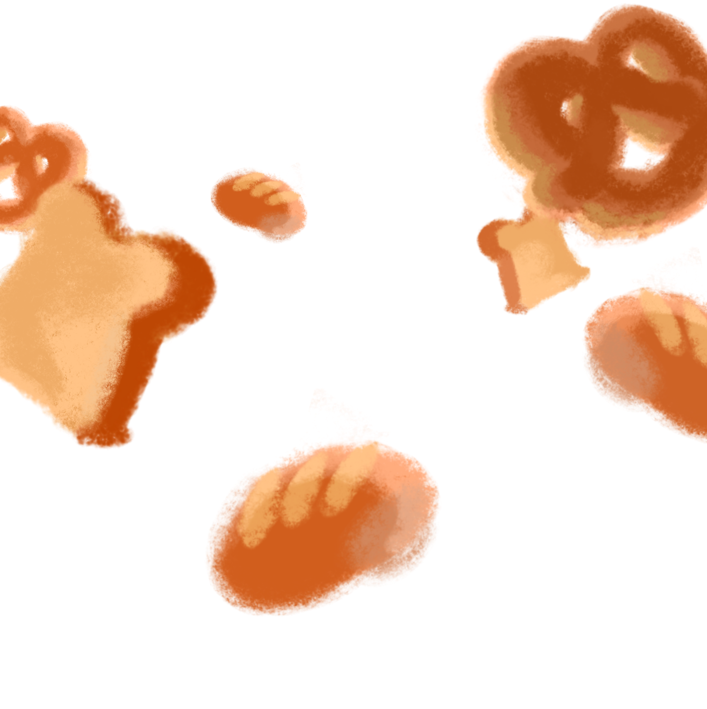

Before
During

&After
Try clicky click the "tabs" below with more clicky links! Choose "Witness" or "NECESSITIES" to witness the craft of before, during, and after! You will be directed back home after your journey. Here's another line to make this block of text look more aesthetic.